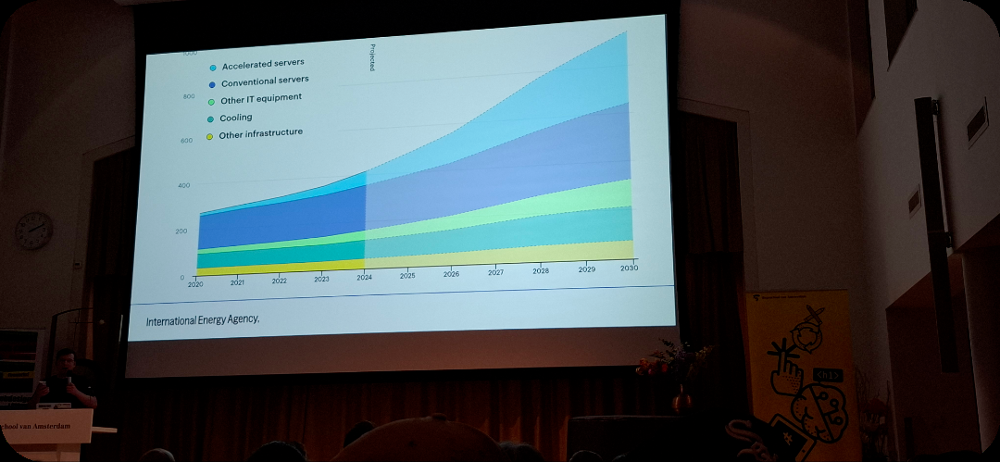
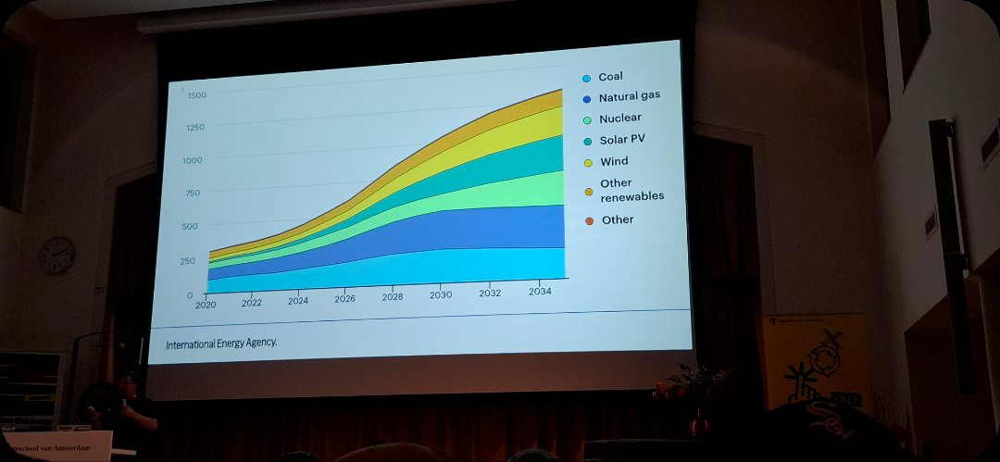

The web should serve us all
Hidde's centrale boodschap: het web zou er voor ons allemaal moeten zijn. Hij bespreekt vijf essentiële eigenschappen die een web dat ons dient zou moeten hebben.
1. Sustainable
We hebben het web nodig om ons te dienen, maar de emissies ervan zijn hoger dan die van vliegtuigen. Als het web een land zou zijn, zou het het op 13 na grootste land ter wereld zijn qua uitstoot.


Als richtlijn om hier iets aan te doen verwijst hij naar de Web Sustainability Guidelines.
De overige essentials
De talk noemt vijf essentiële eigenschappen, maar in mijn aantekeningen heb ik alleen de eerste (sustainable) volledig vastgelegd. De overige punten vul ik aan zodra ik mijn notities compleet heb.